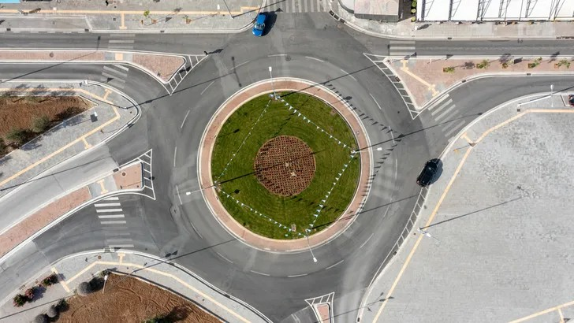
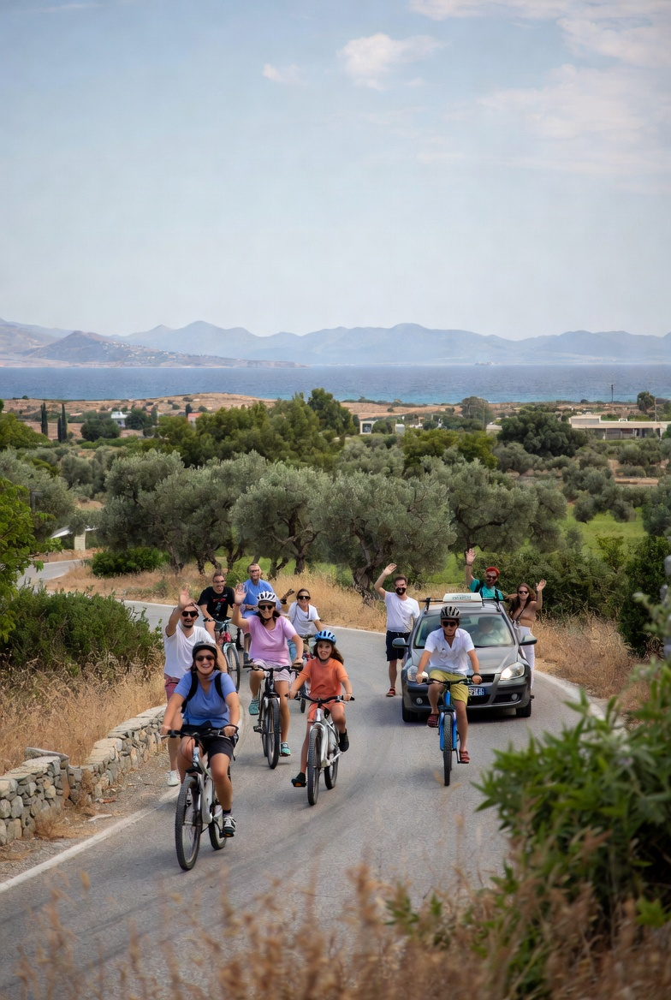
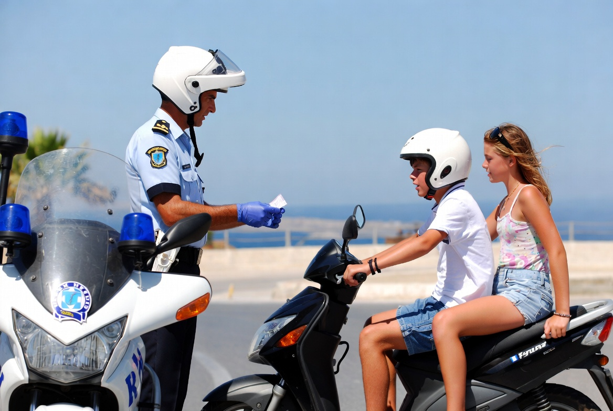
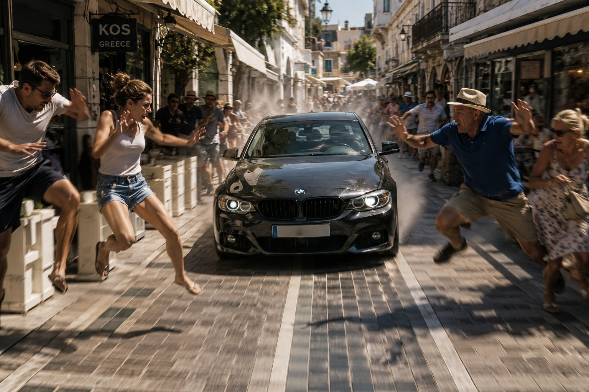
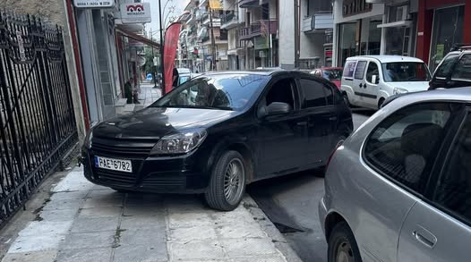

Rotondes
Bij rotondes heeft de bestuurder op de rotonde geen voorrang. Je moet verkeer dat de rotonde oprijdt voorrang geven. Dit is anders dan in Nederland en veel andere landen.
De belangrijkste verschillen op Kos — kort en duidelijk.

Bij rotondes heeft de bestuurder op de rotonde geen voorrang. Je moet verkeer dat de rotonde oprijdt voorrang geven. Dit is anders dan in Nederland en veel andere landen.

Op smalle bergwegen heeft stijgend verkeer voorrang op dalend verkeer.

Men ziet hier vaker mensen zonder helm of zonder gordel rijden, of zelfs telefonerend achter het stuur zitten. Er wordt hier in Kos minder streng gecontroleerd. Dat wil niet zeggen dat er helemaal niet gecontroleerd wordt. Boetes zijn dan in Griekenland niet mals.
Sinds 2018 is er op het eiland een speciale verkeerspolitie. Deze zal strenger handhaven dan de politie in de voorgaande jaren deed, omdat het immers hun taak is deelnemers in het verkeer te controleren, terwijl de (gewone) politie zich ook met andere zaken bezighoudt. Ook heeft de verkeerspolitie sinds kort een laser gun die op snelheid kan controleren.

Men heeft op Kos een eigen rijstijl ontwikkeld, dus ga er niet automatisch van uit dat de andere weggebruiker zich altijd netjes aan de verkeersregels houdt. Let dus altijd goed op!
Daarnaast kunnen de wegen zeer glad zijn in de zomer. Dit komt doordat er geen regenval is en vuil niet van de weg gespoeld wordt. Vooral als u op een scooter rijdt kan dit gevaarlijk zijn. Rem daarom ook nooit alleen met het voorwiel.

Er zijn op Kos geen betaalde parkeerplaatsen. Bij illegaal parkeren kun je wel een boete krijgen.
The most important differences on Kos — short and clear.
On Kos, traffic already on the roundabout does not have priority. You must give way to vehicles entering the roundabout. This is different from many European countries.
On narrow mountain roads, vehicles going uphill have priority over those going downhill.
You may see people without a helmet or seatbelt, or even on the phone while driving. Checks are less strict here, but that does not mean there are no checks. Fines in Greece are not mild.
Since 2018 Kos has a dedicated traffic police. They enforce more strictly than before, because that is their job. They also have a laser gun for speed checks.
Kos has its own driving style, so do not assume other road users always follow the rules. Always stay alert!
Roads can also be very slippery in summer. There is little rain, so dirt is not washed off the road. This is especially dangerous on a scooter. Never brake with the front wheel only.
There are no paid parking zones on Kos. Illegal parking can still lead to a fine.
Die wichtigsten Unterschiede auf Kos — kurz und klar.
Im Kreisverkehr hat der Verkehr keinen Vorrang. Du musst Fahrzeugen Vorrang geben, die einfahren.
Auf engen Bergstraßen hat der bergauf fahrende Verkehr Vorrang.
Du siehst oft Leute ohne Helm oder Gurt, oder am Steuer telefonierend. Es wird weniger streng kontrolliert, aber Kontrollen gibt es. Bußgelder in Griechenland sind nicht mild.
Seit 2018 gibt es eine spezielle Verkehrspolizei. Sie kontrolliert strenger und hat eine Laserpistole für Geschwindigkeitskontrollen.
Auf Kos gibt es einen eigenen Fahrstil — gehe nicht davon aus, dass alle die Regeln einhalten. Immer aufpassen!
Im Sommer können Straßen sehr glatt sein: wenig Regen, Schmutz bleibt liegen. Besonders auf dem Roller gefährlich. Niemals nur mit dem Vorderrad bremsen.
Es gibt keine kostenpflichtigen Parkplätze auf Kos. Illegales Parken kann trotzdem bußgeldpflichtig sein.
Le differenze più importanti a Kos — brevi e chiare.
Chi è già in rotatoria non ha la precedenza. Devi dare precedenza a chi entra.
Sulle strade strette ha precedenza chi va in salita.
Si vedono spesso persone senza casco o cintura, o al telefono mentre guidano. I controlli sono meno rigorosi, ma ci sono. Le multe in Grecia non sono leggere.
Dal 2018 c’è una polizia stradale dedicata, più severa, anche con laser per la velocità.
A Kos c’è uno stile di guida proprio: non dare per scontato che tutti rispettino le regole. Resta sempre attento!
In estate le strade possono essere molto scivolose: poca pioggia, sporco che resta. Specialmente in scooter è pericoloso. Non frenare mai solo con la ruota anteriore.
Non ci sono parcheggi a pagamento. Parcheggiare male può comunque costare una multa.
Kos’taki en önemli farklar — kısa ve net.
Kavşaktaki araçların önceliği yoktur. Giren araçlara yol vermelisiniz.
Dar dağ yollarında yokuş yukarı gidenler önceliklidir.
Kask veya emniyet kemeri olmadan, hatta telefonla sürerken görenler olabilir. Kontroller daha az sıkı olabilir ama yok değildir. Yunanistan’da cezalar hafif değildir.
2018’den beri özel trafik polisi var; daha sıkı denetler ve hız için lazer kullanır.
Kos’ta kendine özgü bir sürüş stili vardır; herkesin kurallara uyduğunu varsaymayın. Her zaman dikkatli olun!
Yazın yollar çok kaygan olabilir: yağmur az, kir yıkanmaz. Özellikle scooter’da tehlikelidir. Sadece ön tekerlekle asla fren yapmayın.
Ücretli park yeri yoktur. Yanlış park cezaya yol açabilir.
Las diferencias más importantes en Kos — breves y claras.
El tráfico que ya está en la rotonda no tiene prioridad. Debes ceder el paso a quien entra.
En carreteras estrechas tiene prioridad quien sube.
Se ve a menudo gente sin casco o cinturón, o al teléfono al volante. Los controles son menos estrictos, pero existen. Las multas en Grecia no son leves.
Desde 2018 hay policía de tráfico dedicada, más estricta, también con láser de velocidad.
En Kos hay un estilo de conducción propio: no asumas que todos siguen las normas. ¡Mantente siempre atento!
En verano las carreteras pueden estar muy resbaladizas: poca lluvia, la suciedad no se limpia. Especialmente en scooter es peligroso. Nunca frenes solo con la rueda delantera.
No hay aparcamiento de pago. Aparcar mal puede conllevar multa.